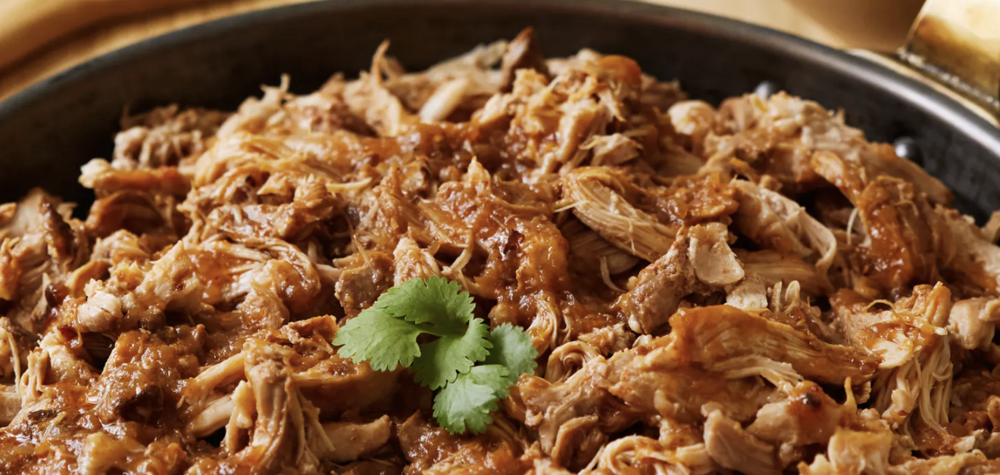

Pulled Chicken

Description
A simple and tasteful pulled chicken done using a slow cooker
Ingredients
- 1 Yellow onion
- 50 ml water
- 3 msk olive oil
- 3 msk soy
- 3 msk chillipowder
- 1 msk tomatopure
- 1 msk red wine vinegear
- salt for flavour
- 900g chicken thigh filet
Steps
- Mix the ingredients in the slow cooker and stir. Put the slowcooker on high heat 3 hours or low heat 5 hours.
- Pull apart the chicken with two forks and mix with the gravy.
- Serve with freshly cut onion, avocado, fresh corriander and creme freiche.